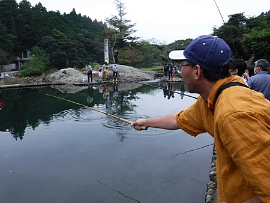

釣行日誌 故郷編
2020/10/04 ニジマスの釣り堀にて
小学１年生になった太郎君と、３つ下の弟の二郎君の兄弟をいつかニジマス釣りに連れて行ってやりたいものだと思っていた。２人にはいつも仲良く遊んでもらっているのだ。
とある秋の穏やかな日曜日にその願いがかなった。
男の子たちとお母さん、僕と４人の友人、臼田さん、後藤田君、加藤君、小柳さんの合わせて８人は、朝８時過ぎにワンボックスカーに乗り込んで出発した。目指すは車で１時間半ほどの川沿いにある、昔ながらの「ニジマスの釣り堀」である。ルアー・フライの管理釣り場全盛の最近では珍しいこの釣り堀を、インターネットで見つけたのだ。途中で、各自のお弁当と、魚を持ち帰るためのブロック氷を買い込んでスチロールのクーラーボックスに入れてから、国道を北に向かう。
この釣り堀は 10:00 オープンなのだが、少し早く着いてしまって、早る心を抑えつつロビーにて少々待つ。時間が来たので受付にて、竿３本分（３人）の料金を払い、常備してある貸し竿を見せてもらう。今となっては珍しい竹の延べ竿であり、長くて遠くを釣れそうだったが、子どもたちにはいささか重いと思えた。そこで、あらかじめ用意してきた２本のテンカラ竿、共に3.2m と、万能竿 3.8m を使うことに決めて、バケツ、練り餌３つ、たも網３本を借りる。
いざ！ 急な階段を降りてニジマスの池に行ってみる。対岸の岩の下が深くなっており、釣れそうに見えたので、岩場づたいに歩いて渡り、一同陣を構える。３本の竿に、昨晩作っておいた仕掛け、ナイロン１号の通し、玉ウキ、カミツブシ、そして最初は、必殺のイクラフライから結んでみる。事前に問い合わせて、ここの管理人さんから、延べ竿なら毛鉤を使ってもＯＫです、と承諾をもらっていたのである。しかし、メンバーの中で釣りをしたことがあるのは臼田さんと後藤田君のみ。ニジマス釣りの仕掛けを準備できるのは僕だけなので、いささか焦りつつ３組の釣り支度を整えた。
いざ、左側の、上池から来る流れ込みに振り込んでやるとすぐに太郎君の竿にアタリ。最初のニジマスが釣れた。続いて二郎君にも。
ところが５分ほど釣って見て、場所選びを間違えたことに気づいた。これが最初の失敗。（笑）
よく観察していると魚の群れは、流れの筋である、向こう岸の石垣近くに固まっていた。こちら岸からは、テンカラ竿では短くて届かない。石垣下に並んだお客さんたちの竿は、次々と曲がり続けている。
この劣勢を挽回すべく、ポイントまでが遠いので、急遽仕掛けを長くする。これも１人で３本分を行うので気が焦ってしょうがない。背後が開けており障害物が無いことを確認して、バックキャストから遠投を試みる。ウキが大きくて重く、加えてカミツブシを２個も付けているので非常にキャストしづらい。ビーズヘッドのニンフにすべきであった。カミツブシが振り込み時のトラブルの原因になってしまう。
おまけに玉ウキのサイズ、すなわち浮力が大き過ぎるので、ニジマスがフライを咥えて引き込む時の違和感が大きく、瞬間的に吐き出されてしまう。大勢のお客さんから毎日いじめられているせいで、連中は皆、非常に狡猾になっている。釣り堀のニジマスと思って、ちょっとなめていたことを思い知らされた。
アタリはたくさんあるが、鈎掛かりさせられない。柔らかいテンカラ竿なので、合わせが遅れるせいかもしれなかった。釣り堀とは言え、ニジマス釣りは初めてのメンバーにとっても、自称ベテランの誰かさんにとっても苦戦が続いた。
また、ここのニジマスたちはフライを見切るのも驚くほど早い。交換して１、２回はアタリがあるものの、すぐに見切られてしまう。さらに、ニンフが沈んで行く最中に咥えるので、アタリが玉ウキに出ないし、それを合わせられないと、釣果に繋がらない。水が綺麗なので、反応がことごとく観察できるのである。（笑）
だんだんと、釣れなくなってきた。
機を見るに敏な後藤田君は、早々と対岸の餌釣りの人たちの方へ移動していった。彼が１尾掛けて竿が大きく曲がっている。ネットを持って助っ人に行こうと思っていたら魚が外れ、地面に落ちてから池に滑り込んでしまった。後藤田君はとても悔しがっていた。
僕たちの居る方の岸は難しいのに、臼井さんが深場で見事に１尾釣り上げた。
12時を過ぎると、「フツー」のお客さんたちはお昼を食べに行ったのか、池が空いてきたので、皆で対岸の石垣の下に移った。すると、待望の放流があった。係の人が大きなバケツに４杯も「新鮮な」ニジマスが池に放たれ、ウブでスレていない養魚池育ちがあちこちを泳ぎ回り始めた。
彼ら、彼女らは警戒心が薄いので、フライを見ると疑うことなく、すぐに喰いついて来る。爆釣タイムが始まった。太郎君、二郎君のテンカラ竿が大きく曲がる。ようやくいなして釣り上げる。太郎君はたも網を持って、皆が掛けたのをすくってあげるが気に入ったらしく、後半はずっとランディングの補助に回っていた。彼らのお母さんの竿にも１尾掛かって、嬉しそうに引きを味わっていた。
加藤君は、合わせが遅れて逃げられてばかり。苦労していたが、持ち前の粘り強さを発揮して、とうとう１尾釣り上げた。

午後３時になり、今日はこのあとで近くの公園に行く予定だったので、釣りを終えることとした。受付で計量してもらうと、3.5kg あった。ちょっと規定の重さを超えたので、余分にお金を払った。台所で係のお兄さんが手早くニジマスのはらわたを取り出してくれた。最終的に、みんなで 24尾釣ったのだった。
釣り上げたニジマスは、後日、兄弟のおばあちゃんが腕を奮ってくれて、おいしい中華あんかけと塩焼きで、みんなの食卓を２回賑わせてくれた。
釣行日誌 故郷編 目次へ
サイトマップ
ホームへ
お問い合わせ